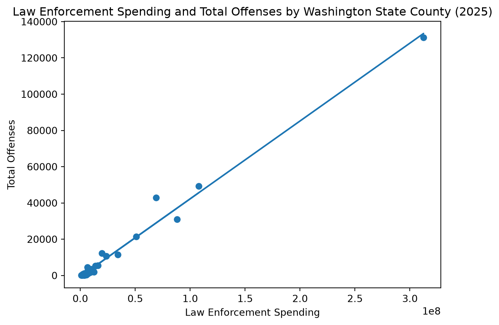
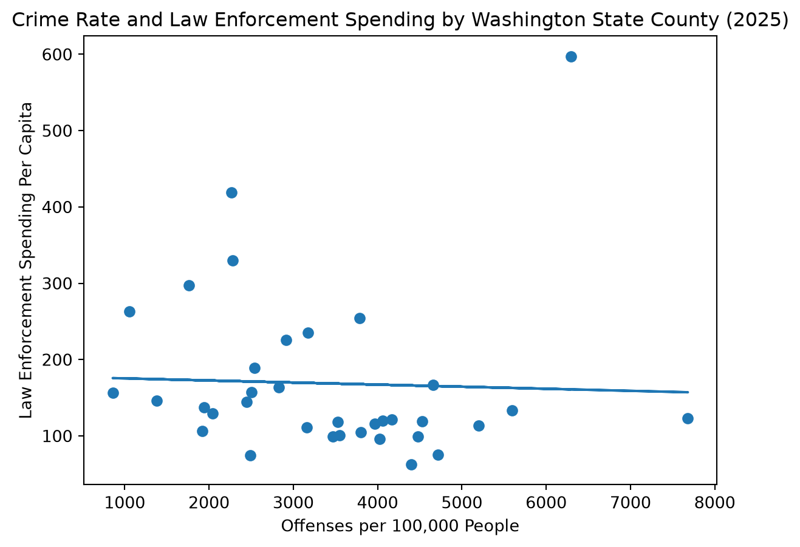
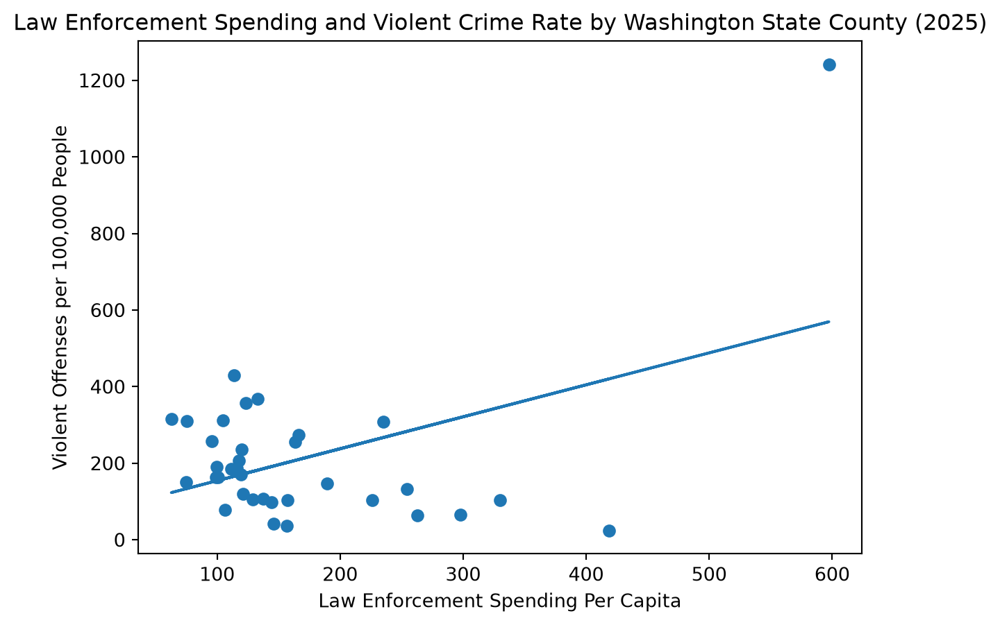

#dependencies
import matplotlib.pyplot as plt
import numpy as np
import pandas as pd
from pyprojroot import here
#importing crime dataset
file_path = here('projects/wa-state-police-social-spending/_data/wa_crime_2025.csv')
crime_2025 = pd.read_csv(file_path)Stage 2: Analyzing Data & Scaffolding the Report
I am using three datasets to explore my research questions about spending and crime rates in Washington state counties.
1. How many offenses were logged in each county in 2025?
‘crime_2025’ is a dataset containing observations of all offenses logged by every police department in Washington in 2025. Each offense also notes the county corresponding to the department that logged it. I want to sum the number of offenses by county.
crime_2025.columns.tolist()['ORI',
'County',
'Agency',
'Reference Number',
'Report Date',
'Victim',
'Offense',
'Location']#cleaning
#dropping columns I'm not interested in
crime_2025_clean = crime_2025.drop(columns=["Reference Number", "Victim", "ORI", "Location", "Agency"])
#remove caps lock
crime_2025_clean["County"] = crime_2025_clean["County"].str.title()
#let's get total counts of the number of the offenses in each county in 2025
county_crime_2025 = (crime_2025_clean
.groupby("County")
.size()
.reset_index(name="Total Offenses"))
#there's a county listed in crime called "state agency" I am dropping before joining
county_crime_2025 = county_crime_2025[county_crime_2025["County"] != "State Agency"]
#county_crime_2025 I choose to drop a column called State Agency, which listed 620 offenses in 2025. After some brief research, I have not been able to determine what State Agency means in this context, but I suspect those may be offenses logged by the Washington State Patrol. Since I am looking at counties specifically, and I do not have spending data for “State Agency”, I choose to drop this column.
2. How many offenses were violent and how many were nonviolent?
Now I’m going to use the ‘crime_2025_clean’ data that lists all offenses to sum by violent and nonviolent crime.
#let's see all of the offenses
crime_2025_clean["Offense"].unique()
#now I'll divide based on FBI UCR definitions of violent & other crime
violent_offenses = [
"Murder Non Negligent Manslaughter",
"Rape",
"Robbery",
"Aggravated Assault"]
#sorting into violent and other
crime_2025_clean["Crime Type"] = np.where(
crime_2025_clean["Offense"].isin(violent_offenses),
"Violent",
"Other")
#sum types of crime by county
county_crime_type = (crime_2025_clean
.groupby(["County", "Crime Type"])
.size()
.unstack(fill_value=0)
.reset_index())
#see violent, other, and total all in one df
county_crime_type["Total Offenses"] = (
county_crime_type["Violent"] +
county_crime_type["Other"])
#drop 'State Agency' in this df too
county_crime_type = county_crime_type[county_crime_type["County"] != "State Agency"]
#county_crime_typeDeciding how to define “violent crime” in this case was difficult because the offenses listed in this dataset are not specific. I initially wanted to use Washington state law’s definition of a violent offense, but it defines violent crime by degree. For example, rape in the first degree is classified as a violent offense but rape in the second degree is not (Source). My data simply lists ‘Rape’, so I don’t feel that I have the ability use the Washington state legal definition without proper specification. I insteaed defined violent crime using the common crime statistics defintion, which is based on the FBI’s Uniform Crime Reporting defintion. UCR lists the following as violent offenses (no matter the degree): murder and nonnegligent manslaughter, rape, robbery, and aggravated assault. I choose to label the categories “Violent” and “Other” because crimes that don’t fall into the FBI’s definition of violent crime are not necessarily nonviolent.
5. Do counties with higher police spending have more offenses?
#dropping the 4 counties with missing spending data
plot = county_data_2025[["Law Enforcement Spending", "Total Offenses"]].dropna()
#making a scatterplot to represent law enforcement spending and total offenses
x = plot["Law Enforcement Spending"]
y = plot["Total Offenses"]
plt.scatter(x, y)
#line of best fit
m, b = np.polyfit(x, y, 1)
plt.plot(x, m*x + b)
plt.xlabel("Law Enforcement Spending")
plt.ylabel("Total Offenses")
plt.title("Law Enforcement Spending and Total Offenses by Washington State County (2025)")
plt.show()
This scatterplot shows a strong positive relationship between law enforcement spending and total offenses by county. This relationship can be explained by population differences.
6. What’s the crime rate in each Washington state county?
#calculating crime rate (crime rate = numnber of crimes per 100k people)
county_data_2025["Offenses Per 100k (crime rate)"] = (county_data_2025["Total Offenses"] / county_data_2025["2025 Population"]) * 100000
#county_data_2025
#county_data_2025[["County", "Offenses Per 100k (crime rate)"]].sort_values("Offenses Per 100k (crime rate)", ascending=False)Spokane, Garfield, and Benton counties have the highest crime rates. Crime rate captures the number of offenses per 100,000 people, calculated using population and number of total offenses.
7. Do counties with higher crime rates have more law enforcement spending?
#per capita spending
county_data_2025["Law Enforcement Spending Per Capita"] = (county_data_2025["Law Enforcement Spending"] / county_data_2025["2025 Population"])
county_data_2025["Social Spending Per Capita"] = (county_data_2025["Social Spending"] / county_data_2025["2025 Population"])
#county_data_2025#scatterplot
plot2 = county_data_2025[["Offenses Per 100k (crime rate)", "Law Enforcement Spending Per Capita"]].dropna()
x = plot2["Offenses Per 100k (crime rate)"]
y = plot2["Law Enforcement Spending Per Capita"]
plt.scatter(x, y)
#line of best fit
m, b = np.polyfit(x, y, 1)
plt.plot(x, m*x + b)
plt.xlabel("Offenses per 100,000 People")
plt.ylabel("Law Enforcement Spending Per Capita")
plt.title("Crime Rate and Law Enforcement Spending by Washington State County (2025)")
plt.show()
There is a weak relationship between crime rates and law enforcement spending per capita. The line of best fit is very slightly negatively sloped. Counties are widely dispersed around the line of best fit, which suggests that counties with higher crime rates do not always spend more per capita on law enforcement. Some counties stand out on this plot as they have high per capita law enforcement spending relative to the rest of the state’s counties.
#correlation coefficient
plot2["Offenses Per 100k (crime rate)"].corr(plot2["Law Enforcement Spending Per Capita"])np.float64(-0.0374176715619598)The correlation coefficient between crime rate and law enforcement spending per capita is -0.037, meaning there’s essentially no linear relationship between these variables.
8. Do counties with higher law enforcement spending have lower violent crime rates?
#calculating violent crime rate
county_data_2025["Violent Offenses Per 100k (crime rate)"] = (county_data_2025["Violent"] / county_data_2025["2025 Population"]) * 100000plot4 = county_data_2025[["Law Enforcement Spending Per Capita", "Violent Offenses Per 100k (crime rate)"]].dropna()
x = plot4["Law Enforcement Spending Per Capita"]
y = plot4["Violent Offenses Per 100k (crime rate)"]
plt.scatter(x, y)
#line of best fit
m, b = np.polyfit(x, y, 1)
plt.plot(x, m*x + b)
plt.xlabel("Law Enforcement Spending Per Capita")
plt.ylabel("Violent Offenses per 100,000 People")
plt.title("Law Enforcement Spending and Violent Crime Rate by Washington State County (2025)")
plt.show()
There is a positive relationship between law enforcement spending per capita and violent crime rates, which challenged my assumption that greater spending would be associated with lower violent crime. There is an extreme outlier in the upper right corner of the plot, which appears to be influencing the relationship.
#identify the outlier
county_data_2025.loc[county_data_2025["Violent Offenses Per 100k (crime rate)"].idxmax()]County Garfield
Law Enforcement Spending 1443127.0
Social Spending 170017.0
Other 122
Violent 30
Total Offenses 152
2025 Population 2416
Offenses Per 100k (crime rate) 6291.390728
Law Enforcement Spending Per Capita 597.320778
Social Spending Per Capita 70.371275
Violent Offenses Per 100k (crime rate) 1241.721854
Name: 11, dtype: objectThe outlier is Garfield County, which happens to be the smallest county (by population) in Washington state. This exposes a limitation in my calculation of crime rate - a county with a small population will get a high crime rate even with very few offenses.